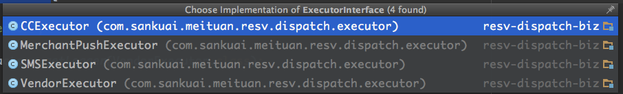

Order & Dispatch重试策略
引言:系统出问题时，不光要关注出什么问题，更需要了解这里会出问题。
1.dispatch重试策略
目标：dispatch需要保证每个分发任务触达到每个渠道并得到各渠道明确答复(接单、拒单、短信、推送发送不成功/不成功等)，在没有明确答复时并且在任务超时时间前，进行重试或补偿
策略：并行使用重试和补偿机制
a.执行没有得到明确答复（如timeout，runtimeException等）时由job驱动不断进行重试。
Interface中增加校验是否是明确答复的method,method校验失败时直接throw Exception或return false，随后job查出未执行的任务进行重试
b.需要强一致性及比较重要的核心操作进行补偿。
dispatch_template中增加是否需要补偿的配置，例如新建订单推送给cc和vendor，这种template需要进行补偿。
Interface中增加补偿方法思路为：查询信息 →不一致时重新推送
dispatch_task中增加一个状态为“已核查”(名称待定)，任务执行状态最终为已核查，由已完成转变，由job驱动进行一致性检测及补偿
package com.sankuai.meituan.resv.dispatch.executor;
import com.sankuai.meituan.resv.dispatch.domain.DispatchTask;
import com.sankuai.meituan.resv.dispatch.service.DispatchTemplateService;
import com.sankuai.meituan.resv.dispatch.service.InformChannelService;
import javax.annotation.Resource;
/**
* Created by lihuaqing on 2017/3/15.
*/
public interface ExecutorInterface {
Boolean execute(DispatchTask dispatchTask);
Boolean isSupport(DispatchTask dispatchTask);
default Boolean validateExcuteSuccess(Object result){
return true;
}
default void compensate(DispatchTask dispatchTask){
return;
}
default Boolean isConsistent(DispatchTask dispatchTask){
return true;
}
}
2.order兜底策略
目标：order需要保证每个订单不会一致维持在非最终状态，最终状态包括（拒单、到店、未到店、取消），按一定规则由job驱动将订单非从最终状态自动流转到最终状态。
目前已有的策略：3天自动到店（接单→到店）
缺少的策略：自动拒单（新建 →拒单）
自动拒单策略:a.规则：当前时间>预约就餐时间
b.存在的风险:新建订单分发任务执行和拿到结果之前存在时间差，理论上可能出现11:59进行ivr外呼、12：00自动拒单、12:01商家才按键接单的情况，会早上商家和系统认知上的不一致。
c.策略（choose one）：
planA（参考电商支付超时情景，先关闭入口等一段时间没支付回调后，才超时）：增加状态“预拒单”(名称待定)，此状态下关闭该订单操作入口（商家后台、开店宝、vendor推送拒单），可以理解为已进行订单拒单操作流转，但如果此阶段有接单操作，依旧可以流转到接单（不会被订单流转规则限制），5min后流转到拒单。
planB (针对目前预订业务)：目前存在此风险的仅有ivr渠道，可以在订单流转规则中增加对cc的后门。
planC (简易版planA)：规则改完当前时间>预约就餐时间+5min。
planD （订单不做改动由CC处理，不推荐）: 按1时check订单状态，如果不匹配则赶回接单失败ivr（仅适用于天润）,或者在cc发任务完成的回调消息时check订单状态，同时重新呼叫商家告知。